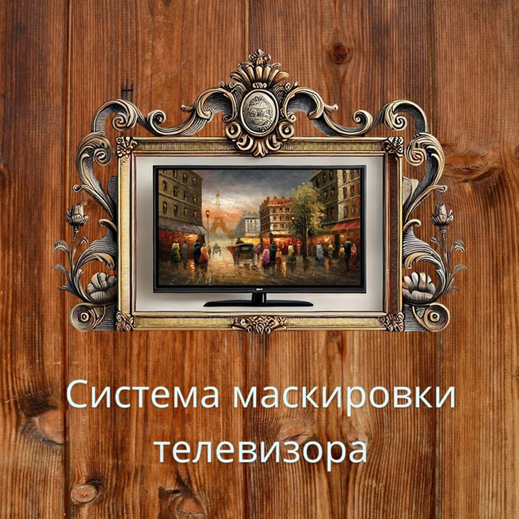
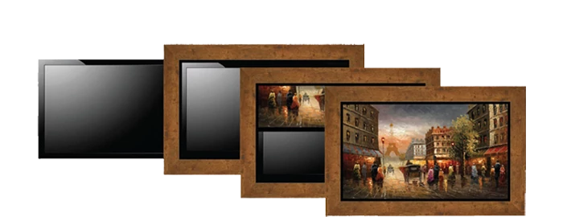
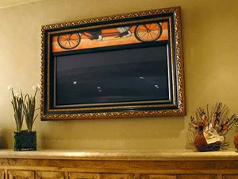

|  TV-Kartina@bk.ru |  |
|
Система маскировки телевизора багетной рамой с картиной в интерьере дома, квартиры, гостиной. телевизор есть в каждом доме и давно уже стал не только домашней техникой, но и неотъемлемой частью интерьера, к размещению которой нужно подходить тщательно, ведь порой даже чрезмерно дорогой телевизор, с огромным трудом вписывается в Ваш интерьер. Цвет телевизора не должен диссонировать с цветом мебели и с элементами интерьера. Телевизор и мебель должны образовывать не только функциональное и эстетическое единство, но и представлять собой единое оформительское решение. Представьте квартиры, оформленные в стилях: классика, модерн, ампир, ар нуво, ар деко, барокко, и т.д. Это - мебель выполненная из редких и дорогих пород дерева, мозаика, лепные гипсовые кессоны, ручная роспись, фламандские кружева, изящная посуда и многое другое, что никак не может примириться c черным или серебристым цветом корпуса практически всей современной аудио-видео техники. Мы предлагаем качественное и стильное решение по совмещению дизайнерского интерьера с современной аудио-видео техникой. Великолепное решение плазменную панель или ЖК телевизор на стене любого размера и пропорций замаскировать картиной - органично вписав его в
интерьер комнаты. Прекрасно оформленные и отделанные рамы из натурального дерева, на первый взгляд служат только обрамлением картин известных
мастеров, но стоит нажать на кнопку пульта, и полотно плавно убирается вверх, открывая зрителям экран плазменной панели или вмонтированный в
стену экран проекционного телевизора. Таким образом, можно скрыть внутристенный сейф, нишу, бар, и т.д.
Помимо эстетической функции, моторизованная система маскировки защищает панель телевизора от загрязнений, пыли, влаги, механических повреждений. |
| WhatsApp +7 (985) 385 - 1880 TV-Kartina @ bk.ru |
{kind=link}
{kind=link}